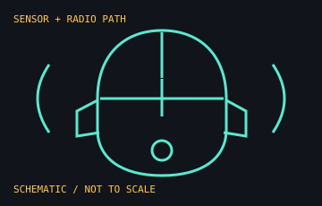

[ MICE AND TRACKBALLS // IDENTIFIED COMPONENT ]
Razer DeathAdder V4 Pro
Lightweight right-handed wireless esports mouse introduced in 2025, with a high-polling-rate receiver and optical input components.

MODEL IDENTIFICATION: RZ01-0533 is the DeathAdder V4 Pro family identifier; color and market suffixes vary. Match the complete underside SKU and included HyperSpeed Gen-2 receiver to the applicable regional product reference.
Recorded specifications
| Sensor | Razer Focus Pro 45K Optical Sensor Gen-2; up to 45,000 DPI, 900 IPS tracking speed, and 85 g acceleration per manufacturer specifications. |
|---|---|
| Switches / wheel | Razer Optical Mouse Switches Gen-4 rated for 100 million clicks; optical scroll wheel. |
| Connection / polling | HyperSpeed Wireless Gen-2 or USB-C wired; up to 8,000 Hz polling in supported wired or wireless configurations. |
| Mass / battery | 56 g black and 57 g white, per Razer's launch specifications. Published battery estimate is up to 150 hours at 1,000 Hz; high polling shortens runtime. |
| Controls | Six programmable controls; no Chroma RGB lighting on this model. |
Compatibility and handling
- Use a compatible USB port for the included wireless receiver; high polling depends on supported receiver, host USB path, software, and settings.
- Advanced remapping and performance configuration require Razer Synapse 4 on a supported operating system. Basic HID behavior may work without the vendor suite.
- Do not apply DeathAdder V3 or older V4-family dimensions, receiver, switch, or battery claims interchangeably.
- Polling rate and RGB claims are not applicable to this no-Chroma model; verify exact color/SKU and included accessories when cataloging.
Manufacturer sources
- Razer — DeathAdder V4 Pro product pageCurrent manufacturer product reference for the model family.
- Razer Newsroom — DeathAdder V4 Pro launch releaseManufacturer announcement with generation-specific design, feature, and weight details.
- Razer — regional DeathAdder V4 Pro SKUManufacturer listing for a regional black SKU within the RZ01-0533 family; other colors and markets have different suffixes.